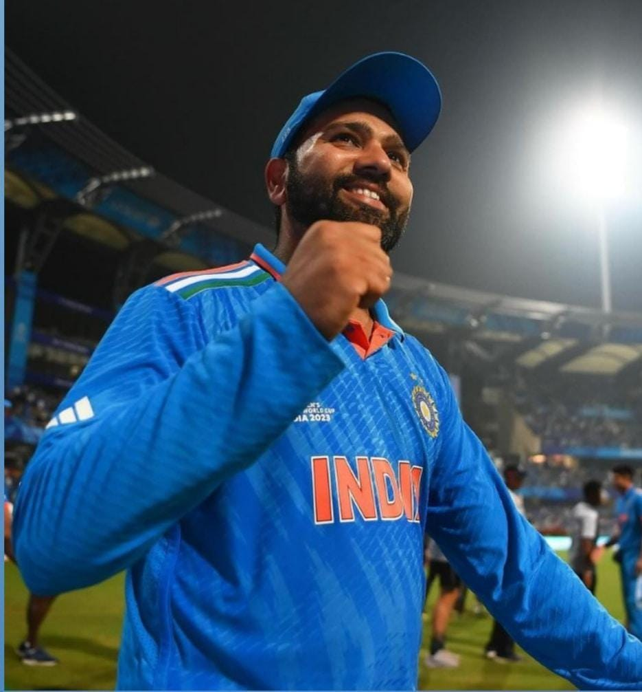
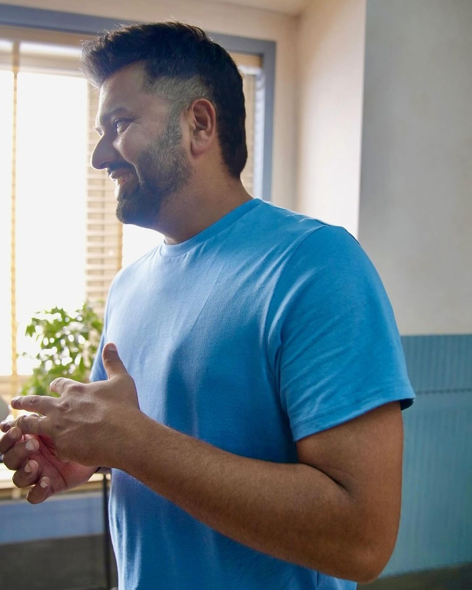

Rohit Sharma, often hailed as the "Hitman"🏏 of
Indian cricket, is a name that resonates with elegance, power, and
records galore. Born on April 30, 1987, in Bansod, Nagpur, India,
Rohit's journey from a talented youngster to one of the most celebrated
cricketers in the world is nothing short of inspiring. Rohit's tryst
with cricket began at a young age when he caught the eye of coaches with
his natural talent and flair. His journey from the streets of Mumbai to
the iconic stadiums reflects the quintessential tale of hard work and
perseverance. Mumbai's cricketing culture became his breeding ground,
shaping him into the player he is today.Rohit Sharma's ODI career is filled with numerous milestones. He is known for his prolific run-scoring ability, often playing match-winning innings for India.

Rohit's international debut came in 2007 against Ireland in an ODI match. However, it was in 2013
that he truly stamped his authority on the cricketing world. His promotion
to the opening position in limited-overs cricket proved to be a
masterstroke, as he effortlessly blended grace with aggression, rewriting
record books with his monumental scores. His ability to remain calm under
pressure situations and deliver match-winning performances has earned him
widespread acclaim. Rohit's strategic brilliance as a captain and his
exceptional leadership skills have guided his teams to numerous victories,
both in domestic and international cricket. Moreover, his dedication to
fitness and continuous improvement serves as an inspiration to aspiring
cricketers worldwide.One of Rohit Sharma's greatest strengths as a batter is his consistency across formats and his ability to adapt to different conditions and situations.

In the Indian Premier League (IPL)🏏, Rohit Sharma has
been a stalwart for theMumbai Indians
franchise, both as a player and as the team's captain. Under his
leadership, Mumbai Indians have won multiple IPL titles, showcasing his
tactical acumen and ability to inspire his teammates. In One Day
Internationals (ODIs), Rohit Sharma's batting prowess is particularly
noteworthy. He holds the record for the highest individual score in ODI
cricket, an astounding264 runs against Sri Lanka in 2014. This innings showcased not only his ability to accumulate runs but
also his capacity to dominate bowling attacks with grace and
precision.Moreover, Rohit Sharma is the only cricketer in history to score
three double centuries in ODIs(💯).
His ability to convert starts into big scores underscores his
reliability and effectiveness as an opening batsman. With a knack for
pacing his innings according to the match situation, Rohit has been
instrumental in India's successes in ODIs over the years. Apart from his
cricketing exploits, Rohit Sharma is also known for his philanthropic
endeavors.